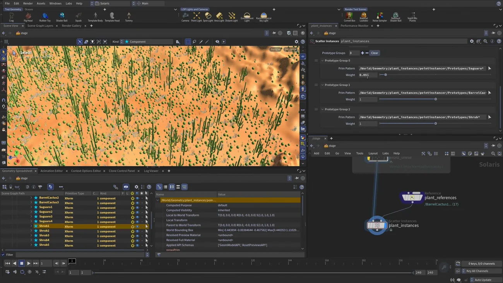

Solaris でインスタンスを散布する — Scatter Instances
出典: Houdini 22 | How to Scatter Instances in Solaris （SideFX 公式「Houdini 22 How-To」の1本 / Houdini 22 / 16:48 / 英語）。 このページは、上記の動画を見ながら自分用にまとめた日本語の学習メモです。SideFX 公式の翻訳ではありません。
Paint Instances との違い
Scatter Instances LOP は USD の Hydra をベースにした 新しい種類のレンダープロシージャルを作ります。
Paint Instances との決定的な違いは、 散布先の点群を用意しないことです。プリムを指定するだけで、その上に自動で散らします。
手で置くのが Paint Instances、自動で大量に散らすのが Scatter Instances という分担になります。
1. アセットを参照する
referenceノードで multiple references にし、USD アセットを引き込みます- ワイルドカードを使います。
barrel_cactus*のように末尾に*を付けると、 その名前で始まるバリアント全部が入ります（shrub1〜shrub10なども一括） - ビューは Solaris デスクトップに切り替えます（シーングラフツリーが必要です）
- まとめて
plant_referencesと命名します。この例では計 17 プロトタイプになります
2. Scatter Instances を繋ぐ
| 入力 | 繋ぐもの |
|---|---|
| 第1入力 | ステージ（それまでに組んだシーン全部） |
| 第2入力 | プロトタイプ（plant_references） |
- Source Geometry を設定します。
Ctrl+ クリックでジオメトリを開き、terrain の mesh を選びます - Primitive Path を設定します。
/World/Geometryをドラッグして/$OSを足します。 ノード名をplant_instancesにすればパスもそれに従います
3. ビューポートに何も出ない — Deferred と Immediate
ここがこの回でいちばん大事な話です。ビューポートに出ないのはバグではなく、 既定が Deferred モードだからです。
| モード | 挙動 |
|---|---|
| Deferred（既定） | プロシージャルをレンダー時にだけ実行します。 USD ステージとレンダーの間にある Hydra のレイヤーにデータが載ります。 ディスク上のファイルが小さく、重いプロトタイプでもビューポートが軽いのが利点です |
| Immediate | USD に point instance を直接オーサリングします。ビューポートにそのまま出ます。 USD データなのでそのままディスクに書き出せますし、レンダー開始が速いです。ファイルは大きくなります |
Deferred のままでも Karma CPU をオンにすると出てきます。 また表示オプション（眼鏡アイコン）の Hydra Generative Procedurals をオンにすれば ビューポートにも描画できますが、遅くなります。
使い分け
凝ったプロシージャルが要らず「プリムの上に散らすだけ」なら Immediate で十分です。 重いアセットを大量に扱ってビューポートを軽く保ちたいなら Deferred。 動画ではこの後 Immediate で進めています。
4. どこに散らすか（Scattering タブ）
| 設定 | 内容 |
|---|---|
| Number of Instances | この例では 75,000 |
| Texture Map / Prim Var | 散布範囲の制御に使えます |
| この例の primvar | terrain のメッシュに mask という primvar が仕込まれています
（Copernicus ネットワークで作って stash 済み）。オンにして mask と指定すると、
Houdini ロゴの渦の形に散布されます |
| Up Axis Direction マスク | 実務で一番効きます。組み込みで、Max Angle で地形の傾きに応じて散布を制限できます。 5 にすると最も平らな部分だけ、この例では 20。急斜面にサボテンが生えなくなります |
Texture Map でも同じことができます（画像を直接指定します）。
5. 向きと回転（Transforms タブ）
| パラメータ | この例の値 | 意味 |
|---|---|---|
| Orient to Surface の Surface Blend | 0.1 |
面の法線にどれだけ沿わせるか。下げると直立に近づきます。この例はほぼ直立です |
| 同 variation | 0.25 |
少しだけ傾きをばらします。全部完璧に直立だと CG くさくなるためです |
| Spin の variation | 360 |
上軸まわりの回転を完全にランダムにします |
Spin は刻みを付けることもできます。90 にすれば
0 / 90 / 180 / 270 の4方向のいずれかにしか回りません。
prim var やマップで駆動することもできるので、ここは触りどころが多い部分です。
「全部完璧に直立だと CG くさくなる」という理由がはっきり語られているのが良いなと思いました。 ばらつきを入れるのは自然に見せるための手当てです。
6. 種類の比率を決める（Prototypes タブ）
散らしてみるとサグアロサボテンが多すぎて低木が足りないという状態になります。 これを直すのが Prototype Groups です。

- プロトタイプをグループにまとめられます。Prim Pattern を作ります
- サグアロをドラッグして貼り、末尾に
*を付けます → サグアロ全部が1グループ - 同様に barrel cactus、shrub のグループを作ります
- Scattering Weight で比率を決めます
重みを触るとサグアロの数が劇的に減ります。
動画で使っている値はサグアロが 0.02 で、
残りは低木と barrel cactus がおおよそ半々になる配分です。
「主役は少なく、脇役を多く」という比率を数値で書ける形になっているので、 見た目を見ながら調整できます。
この回のまとめ
- 散布先の点群を作りません。プリムを指定するだけで自動で散らします
- アセットの取り込みはワイルドカードで一括できます（
barrel_cactus*） - 入力は第1がステージ、第2がプロトタイプです
- ビューポートに出ないのは既定が Deferred だからです。バグではありません
- Deferred はファイルが小さくビューポートが軽い、Immediate は USD に直接書くのでそのまま書き出せる。凝ったことをしないなら Immediate で十分です
- 散布範囲は primvar / テクスチャ / Up Axis Direction で制御します
- Up Axis Direction の Max Angle が実務で一番効きます。急斜面に生えなくなります
- Surface Blend を下げると直立に近づきます。variation で少しばらすと CG くささが消えます
- Prototype Groups と Scattering Weight で種類の比率を決められます
手で置きたい場合はPaint Instances の回が対応します。 ブラシで1つずつ置いたり、範囲を囲んで散らしたりできます。